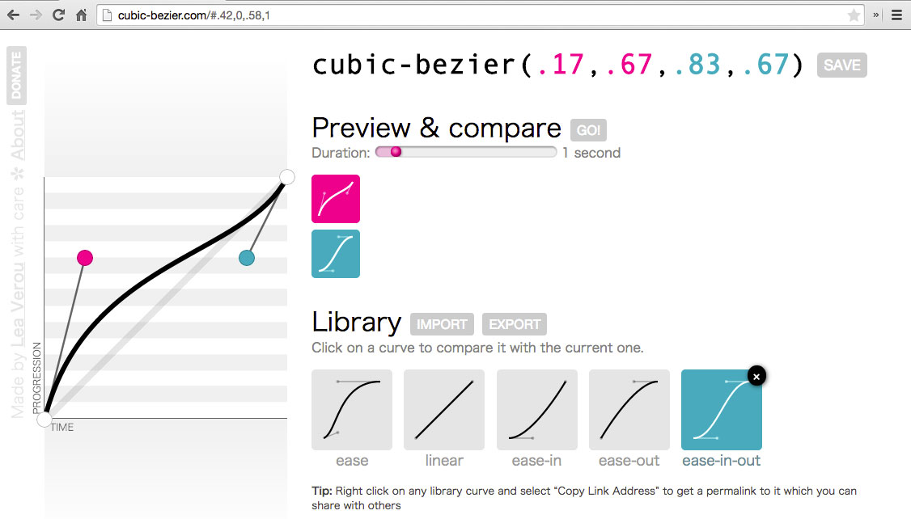

Whenever things happen,
we automatically invent a narrative
to explain those events.
post hoc ergo propter hoc
When we animate an interface correctly,
we make sure users don’t make up the wrong story.
:hover
The illusion of life from cento lodigiani on Vimeo.
animation-timing-function: linear;animation-timing-function: ease-in;animation-timing-function: ease-out;animation-timing-function: ease-in-out;
animation-timing-function: linear;animation-timing-function:
cubic-bezier(.6,-0.14,.77,1.29);opacity
transform
[*-]color
margin
padding
width
height
top
right
bottom
left
font-size
border
box-shadow
@media (prefers-reduced-motion: reduce) {
* {
animation: none !important;
transition: none !important;
}
}
@media (prefers-reduced-motion: reduce) {
:root {
--animation-delay: 0s !important;
--animation-duration: 0s !important;
--transition-delay: 0s !important;
--transition-duration: 0s !important;
}
}
jdsteinbach